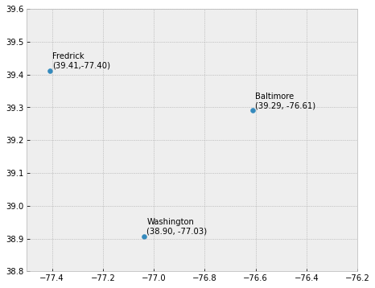

import geopandas as gpd
import matplotlib.pyplot as plt
from shapely.geometry import Point
plt.style.use('bmh') # better for plotting geometries vs general plots.
d = {'name': ['Washington\n(38.90, -77.03)', 'Baltimore\n(39.29, -76.61)'], 'geometry': [Point(38.907192, -77.036873), Point(39.290386, -76.612190)]}
gdf = gpd.GeoDataFrame(d, crs="EPSG:4326")
fig, ax = plt.subplots(figsize=(12, 6))
gdf.plot(ax=ax)
plt.xlim([38.5, 40])
for x, y, label in zip(gdf.geometry.x, gdf.geometry.y, gdf.name):
ax.annotate(label, xy=(x, y), xytext=(3, 3), textcoords="offset points")

import geopandas
from plotnine import *
X = [1,3,2]
Y =[2,1,3]
(
ggplot() + geom_point(aes(x=X, y=Y), size=2) +
theme(title = NULL) +
coord_cartesian(xlim = c(0,4), ylim = c(0,4)) +
geom_text(aes(x=X, y=Y, label = paste("(",X,",",Y,")",sep="")), hjust = 1.2, size=3)
)
File "<ipython-input-2-0285122a5659>", line 5
Y =[2,1,3]
^
IndentationError: unexpected indent
gdf
| col1 | geometry | |
|---|---|---|
| 0 | WasDC | POINT (38.90719 -77.03687) |
| 1 | Phili | POINT (39.95258 -75.16522) |